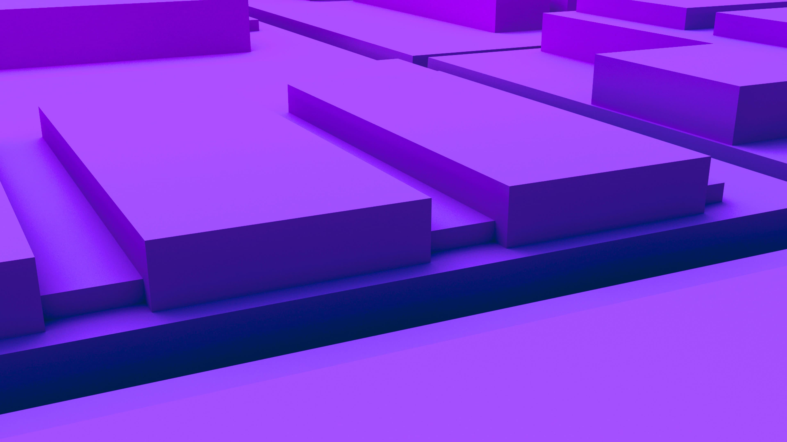

Digital CommunityDigital Community_Digital Community_
16 results for

Jeevanandham Poongavanam21 Oct 2025

Jeevanandham Poongavanam11 Sept 2025
Andrea Pacino, Sherrylene Gauci19 Jun 2025
Marco Antonio Blanco17 Apr 2025

Coston Perkins12 Nov 2024
Jeevanandham Poongavanam21 Oct 2025
Andrea Pacino, Sherrylene Gauci19 Jun 2025
Marco Antonio Blanco17 Apr 2025
Coston Perkins12 Nov 2024
Insight, imagination and expertly engineered solutions to accelerate and sustain progress.